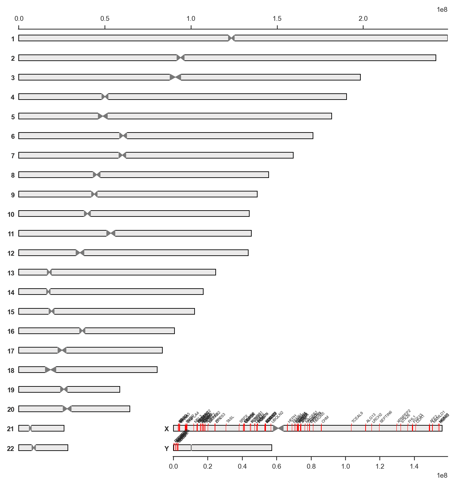

from collections import defaultdict
import numpy as np
import matplotlib.pyplot as plt
import seaborn as sns
sns.set_style('white')
%matplotlib inline
%config InlineBackend.figure_format = 'retina'
import geneinfo as gi
gi.email('your@email.com')Chromosome ideograms
annotation = [
('chr1', 50000000, 50001000), # segment color defaults to red
('chr2', 10000000, 1000000, 'green'), # with segment color
('chr3', 45000000, 55000000, 'blue', 'NAME'), # with name label
('chr6', 10000000, 15000000, 'magenta', None, 0, 0.5), # with base and height
('chr6', 10000000, 15000000, 'pink', None, 0.5, 0.5), # with base and height
]
gi.chrom_ideogram(annotation, figsize=(8, 8))
To make sure segments are visible on the plot, the default minimal size of plotteed segments are 200000. This can be changed like this (notice how the chr1 segment is no longer visible):
gi.chrom_ideogram(annotation, figsize=(8, 8), min_visible_width=1, hspace=0)
Other assembly, figure dimentions:
gi.chrom_ideogram(annotation, assembly='hg19', figsize=(8, 8))
You can add position markers along a chromosome like this to better see the location of some segments:
chrom = 'chr3'
start = 100000000
end = 200000000
width = 10000000
annotation2 = annotation + [(chrom, x[0], x[1], 'black', str(x[2]/width)) for x in zip(
range(start, end, width),
range(start+1, end, width),
range(start, end, width)
)]
gi.chrom_ideogram(annotation2, figsize=(8, 8))
lists = gi.GoogleSheet()import importlib
import geneinfo
importlib.reload(geneinfo)
coords = gi.gene_coord(lists.get('xi_escape'), assembly='GRCh38')
annotation = [(c, s, e, 'red', g) for g, (c, s, e, _) in coords.items()]coords = gi.gene_coord(['ATRX', 'MAGT1'], assembly='GRCh38')
annotation = [(c, s, e, 'red', g) for g, (c, s, e, _) in coords.items()]class Point:
def __init__(self, x, y):
self.x = x
self.y = y
class Polygon:
def __init__(self, points):
self.points = points
def get_points(self):
return self.points
def nudge_y(self, nudge):
for point in self.points:
point.y += nudge
def is_polygons_intersecting(a, b):
for x in range(2):
polygon = a if x == 0 else b
for i1 in range(len(polygon.get_points())):
i2 = (i1 + 1) % len(polygon.get_points())
p1 = polygon.get_points()[i1]
p2 = polygon.get_points()[i2]
normal = Point(p2.y - p1.y, p1.x - p2.x)
min_a = float('inf')
max_a = float('-inf')
for p in a.get_points():
projected = normal.x * p.x + normal.y * p.y
min_a = min(min_a, projected)
max_a = max(max_a, projected)
min_b = float('inf')
max_b = float('-inf')
for p in b.get_points():
projected = normal.x * p.x + normal.y * p.y
min_b = min(min_b, projected)
max_b = max(max_b, projected)
if max_a < min_b or max_b < min_a:
return False
return True
a = list(zip([0, 0, 2, 2], [0, 2, 2, 0]))
b = list(zip([1, 1, 3, 3], [1, 3, 3, 1]))
is_polygons_intersecting(
Polygon([Point(*tup) for tup in a]),
Polygon([Point(*tup) for tup in b])
)Trueimport pandas as pd
import math
from matplotlib.artist import Artist
axes_height = 1e4 # relative to length of chrom one
max_chrom_size = 1e5
aspect = axes_height / chrom_size
fig_width_inches = 8
axes_height_inches = fig_width * aspect
fig_height = axes_height_inches * nr_rows
nr_rows = 11
fig, axes = plt.subplots(nr_rows, 1, figsize=(fig_width, fig_width*aspect*nr_rows), sharex=True, sharey=True)
plt.subplots_adjust(hspace=0)
ax = axes[0]
xlim = (0, max_chrom_size)
ylim = (0, 6)
scaled_y_lim = xlim[0] * aspect, xlim[1] * aspect
ax.set_xlim(xlim)
ax.set_ylim(scaled_y_lim)
plt.yticks([])
y_unit = -sub(*scaled_y_lim) / -sub(*ylim)
rel_font_height = 0.07
font_size = rel_font_height * axes_height_inches / point_size
def draw_text(x_pos, y_pos, text, font_size, ax, y_line_bottom=0):
t = ax.text(x_pos, y_pos, text, fontsize=font_size,
horizontalalignment='left',
verticalalignment='bottom',
rotation=45, zorder=3,
bbox=dict(boxstyle='square,pad=0', fc='none', ec='none'))
# t.set_bbox(dict(facecolor='red', pad=0, alpha=0.2, edgecolor='none'))
ax.plot((x_pos, x_pos, x_pos+y_unit/6),
(y_line_bottom, y_pos, y_pos+y_unit/6),
linewidth=0.5, color='darkgray', zorder=2)
def get_polygon(text:str, x_pos:int, y_pos:float, ax:matplotlib.axes.Axes) -> Polygon:
y_pos = y_pos * y_unit
t = ax.text(x_pos, y_pos, text, fontsize=font_size,
horizontalalignment='left',
verticalalignment='bottom',
rotation=0, zorder=3,
# bbox=dict(boxstyle='square,pad=0',
bbox=dict(boxstyle='square',
fc='none', ec='none', alpha=0.4))
transf = ax.transData.inverted()
bb = t.get_window_extent(renderer = fig.canvas.get_renderer())
bbt = bb.transformed(transf)
coords = bbt.get_points()
Artist.remove(t)
(x0, y0), (x1, y1) = coords
pad = (y1 - y0)/5
coords = np.array([(x0, y0), (x0, y1), (x1, y1), (x1, y0)])
x, y = zip(*coords)
df = pd.DataFrame(dict(x=x, y=y))
df['y'] -= y_pos
df['x'] -= x_pos
dfx = df['x']*math.cos(math.radians(45))-df['y']*math.sin(math.radians(45))
df['y'] = df['x']*math.sin(math.radians(45))+df['y']*math.cos(math.radians(45))
df['x'] = dfx
df['y'] += y_pos
df['x'] += x_pos
coords = np.array(list(zip(df.x, df.y)))
x_pos, y_pos = df['x'][0] - (df['x'][0] - df['x'][1]), df['y'][0]
df['x'] = df.x + np.array([-pad, -pad, pad, pad])
df['y'] = df.y + np.array([-pad, pad, pad, -pad])
return x_pos, y_pos, Polygon([Point(x, y) for x, y in zip(df.x, df.y)])
# annot = [(x, 'AKAP4') for x in range(1, int(max_chrom_size), int(max_chrom_size/100))]
import random
_names = random.choices(['AKAP4', 'DYNLT3', 'MAGEA4', 'TP53'], k=100)
_pos = np.random.randint(1, max_chrom_size, 100).tolist()
annot = list(zip(_pos, _names))
#annot = [(x, 'AKAP4') for x in np.random.randint(1, max_chrom_size, 100).tolist()]
annot = sorted(annot, reverse=True)
for ax in axes:
polybuff = []
for pos, name in annot:
x, y, poly = get_polygon(name, pos, 1, ax)
while any(is_polygons_intersecting(poly, p) for p in polybuff):
nudge = 0.1 * y_unit
y += nudge
poly.nudge_y(nudge)
draw_text(x, y, name, font_size, ax)
if len(polybuff) > 5:
del polybuff[0]
polybuff.append(poly)
z = 10
for i, t in enumerate(reversed(ax.texts)):
t.set_zorder(z+i)
# text = 'Tester'
# x, y, poly = get_polygon(text, chrom_size/2, 2, ax)
# nudge = -1 * y_unit
# y += nudge
# poly.nudge_y(nudge)
# draw_text(x, y, text, font_size, ax)
# text = 'AKAP4'
# x, y, poly = get_polygon(text, chrom_size/2, 2, axes[1])
# nudge = +1 * y_unit
# y += nudge
# poly.nudge_y(nudge)
# draw_text(x, y, text, font_size, axes[1])# import pandas as pd
# import math
# from matplotlib.artist import Artist
# axes_height = 1e4 # relative to length of chrom one
# max_chrom_size = 1e5
# aspect = axes_height / chrom_size
# fig_width_inches = 8
# axes_height_inches = fig_width * aspect
# fig_height = axes_height_inches * nr_rows
# nr_rows = 11
# fig, axes = plt.subplots(nr_rows, 1, figsize=(fig_width, fig_width*aspect*nr_rows), sharex=True, sharey=True)
# plt.subplots_adjust(hspace=0)
# ax = axes[0]
# xlim = (0, max_chrom_size)
# ylim = (0, 6)
# scaled_y_lim = xlim[0] * aspect, xlim[1] * aspect
# ax.set_xlim(xlim)
# ax.set_ylim(scaled_y_lim)
# plt.yticks([])
# y_unit = -sub(*scaled_y_lim) / -sub(*ylim)
# rel_font_height = 0.1
# font_size = rel_font_height * axes_height_inches / point_size
# def draw_text(x_pos, y_pos, text, font_size, rel_font_height, ax, y_line_bottom=0):
# ax.text(x_pos, y_pos, 'Tester', fontsize=font_size,
# horizontalalignment='left',# weight='bold',
# verticalalignment='bottom',
# rotation=45, zorder=3,
# bbox=dict(boxstyle='square,pad=0', fc='none', ec='none'))
# (_, a), (_, b) = ax.transAxes.transform([(0, 0), (0, rel_font_height / 2)])
# z = b - a
# z = 300
# z = y_unit/6
# ax.plot((x_pos, x_pos, x_pos+z),
# (y_line_bottom, y_pos, y_pos+z),
# linewidth=0.5, color='gray')
# def get_polygon(text:str, x_pos:int, y_pos:float, font_size:float, ax:matplotlib.axes.Axes) -> Polygon:
# y_pos = y_pos * y_unit
# # x_pos, y_pos = chrom_size/2, 2*y_unit
# # ax.scatter([x_pos], [y_pos], marker='X', color='black')
# t = ax.text(x_pos, y_pos, 'Tester', fontsize=font_size,
# horizontalalignment='left',# weight='bold',
# verticalalignment='bottom',
# rotation=0, zorder=3,
# bbox=dict(boxstyle='square,pad=0', fc='none', ec='none', alpha=0.4))
# # t.set_visible(False)
# transf = ax.transData.inverted()
# bb = t.get_window_extent(renderer = fig.canvas.get_renderer())
# bbt = bb.transformed(transf)
# coords = bbt.get_points()
# Artist.remove(t)
# (x0, y0), (x1, y1) = coords
# coords = np.array([(x0, y0), (x0, y1), (x1, y1), (x1, y0)])
# # ax.scatter(*coords.T, c='red')
# # ax.scatter(*zip(*coords), transform=ax.transAxes, s=1, color='green', zorder=3)
# x, y = zip(*coords)
# df = pd.DataFrame(dict(x=x, y=y))
# df['y'] -= y_pos
# df['x'] -= x_pos
# dfx = df['x']*math.cos(math.radians(45))-df['y']*math.sin(math.radians(45))
# df['y'] = df['x']*math.sin(math.radians(45))+df['y']*math.cos(math.radians(45))
# df['x'] = dfx
# df['y'] += y_pos
# df['x'] += x_pos
# #df['x'] -= df['x'][1] - df['x'][0]
# coords = np.array(list(zip(df.x, df.y)))
# x_pos, y_pos = df['x'][0] - (df['x'][0] - df['x'][1]), df['y'][0]
# # _ = ax.text(x_pos, y_pos, 'Tester', fontsize=font_size,
# # horizontalalignment='left',# weight='bold',
# # verticalalignment='bottom',
# # rotation=45, zorder=3,
# # bbox=dict(boxstyle='square,pad=0', fc='none', ec='none'))
# # ax.scatter(*coords.T, c='blue')
# # ax.plot(*zip(*coords), linewidth=0.2)
# return x_pos, y_pos, Polygon([Point(x, y) for x, y in zip(df.x, df.y)])
# annot = [(x, 'AKAP4') for x in range(1, int(max_chrom_size), int(max_chrom_size/200))]
# for i, ax in enumerate(axes):
# annot = [(x, 'AKAP4') for x in range(1, int(max_chrom_size), int(max_chrom_size/(10*(i+1))))]
# polybuff = []
# for pos, name in annot:
# x, y, poly = get_polygon(name, pos, 1, rel_font_height, ax)
# while any(is_polygons_intersecting(poly, p) for p in polybuff):
# nudge = 0.1 * y_unit
# y += nudge
# poly.nudge_y(nudge)
# draw_text(x, y, name, font_size, rel_font_height, ax)
# if len(polybuff) > 5:
# del polybuff[0]
# polybuff.append(poly)import matplotlib.transforms
from matplotlib.transforms import Bbox
fig, ax = plt.subplots()
plt.xlim(0, 0.5)
plt.ylim(0, 1)
t = ax.text(0.2, 0.2, 'Text', fontsize=30, horizontalalignment='left',# weight='bold',
verticalalignment='bottom', rotation=0, zorder=3, bbox=dict(boxstyle='square,pad=0', fc='red', ec='none'))
transf = ax.transData.inverted()
bb = t.get_window_extent(renderer = fig.canvas.get_renderer())
bbt = bb.transformed(transf)
coords = bbt.get_points()
print(coords)
(x0, y0), (x1, y1) = coords
plt_coords = np.array([(x0, y0), (x0, y1), (x1, y1), (x1, y0)])
ax.scatter(*plt_coords.T, c='red')
from operator import sub
aspect_ratio = sub(*ax.get_ylim()) / sub(*ax.get_xlim())
#x0, y0 = coords[0]
# (x0, y0), (x1, y2) = coords
trafo = matplotlib.transforms.Affine2D().rotate_deg_around(x0,y0,45).skew(1, 1.3)#.scale(0.5)
coords = trafo.transform([(x0, y0), (x0, y1), (x1, y1), (x1, y0)])
# coords = trafo.transform([(x0, y0), (x1, y1)])
# coords = trafo.transform(coords)
print(coords)
ax.scatter(*coords.T, zorder=10)
disp_ratio = ax.get_data_ratio()
bbox = ax.get_window_extent().transformed(fig.dpi_scale_trans.inverted())
disp_ratio = bbox.width / bbox.height
print(disp_ratio)
(x0, y0), (x0, y1), (x1, y1), (x1, y0) = coords
coords = np.array([(x0, y0), (x0, y1), (x1, y1), (x1, y0)])
ax.scatter(*coords.T)
Polygon([Point(x0, y0), Point(bbt.xmin, b[1]+(b[0]-bbt.xmin)), Point(b[2], b[3]), Point(bbt.xmax, b[3]-(b[0]-bbt.xmin))])
#Bbox.count_overlaps[[0.2 0.2 ]
[0.27711694 0.30281385]]
[[0.51148154 0.92042049]
[0.55200529 0.73124667]
[0.6914605 0.9821989 ]
[0.65093675 1.17137271]]
1.3419913419913418
import matplotlib.pyplot as plt
import matplotlib.patches as patches
import matplotlib.transforms as transforms
fig, ax = plt.subplots()
# [[0.25574077 0.46021024]
# [0.29626452 0.27103643]
# [0.43571973 0.52198865]
# [0.39519598 0.71116247]]
# [[0.1 0.1 ]
# [0.17711694 0.20281385]]
r1 = patches.Rectangle((0.1, 0.1), 0.2, 0.1, color="blue", alpha=0.5)
r2 = patches.Rectangle((0.1, 0.1), 0.2, 0.1, color="red", alpha=0.5)
p = 0.1, 0.1 # rotate around this point
x_lim = (0, 0.5)
y_lim = (0, 1)
ax.set_xlim(x_lim)
ax.set_ylim(y_lim)
x_range = x_lim[1] - x_lim[0]
y_range = y_lim[1] - y_lim[0]
aspect_ratio = y_range / x_range
move_transform = transforms.Affine2D().translate(-p[0], -p[1])
inverse_move_transform = transforms.Affine2D().translate(p[0], p[1])
inverse_scale_transform = transforms.Affine2D().scale(1, 1 / aspect_ratio)
rotate_transform = transforms.Affine2D().rotate_deg(45)
scale_transform = transforms.Affine2D().scale(1, aspect_ratio)
total_transform = move_transform + inverse_scale_transform + rotate_transform + scale_transform + inverse_move_transform + ax.transData
r2.set_transform(total_transform)
ax.add_patch(r1)
ax.add_patch(r2)
# print(ax.transLimits.transform([(0.1, 0.1), (0.1, 0.2), (0.3, 0.2), (0.3, 0.1)]))
# print(total_transform.transform([(0.1, 0.1), (0.1, 0.2), (0.3, 0.2), (0.3, 0.1)]))
# print(r2.get_bbox())
# x0, y0, width, height = r2.get_bbox().bounds()
# print(x0, y0)
# coords = [(x0, y0),
# (x0 - sqrt(height**2 / 2), y0 + sqrt(height**2 / 2)),
# (x0 - sqrt(height**2 / 2) + sqrt(width**2 / 2), y0 + sqrt(height**2 / 2)) + + sqrt(width**2 / 2),
# (x0 + sqrt(width**2 / 2), y0 + sqrt(width**2 / 2))]
# plt.scatter(*zip(*coords))
# coords = ((0.1, 0.1), (0.1, 0.2), (0.3, 0.2), (0.3, 0.1))
# plt.scatter(*zip(*coords))
# coords = total_transform.transform(coords)
# print(coords)
# plt.scatter(*zip(*coords))
plt.grid(True)
plt.show()
import numpy as np
import matplotlib.pyplot as plt
import matplotlib.patches as patches
import matplotlib as mpl
from math import *
#some helper values
p=4
theta=pi/6
x1 = p*cos(theta/2)
y1 = p*sin(theta/2)
vertices =[(-x1-p/2,0), (-p/2, y1), (p/2, y1), (x1+p/2, 0), (p/2, -y1), (-p/2, -y1)]
midPoint = [3,4]
endPoint = (-x1-p/2,0)
#set up the plot
fig = plt.figure()
ax = fig.add_subplot(111)
#function to rotate and translate the standard shape to a new position
def plot_polygon(vertices, midPoint, theta, color):
polygon = patches.Polygon(vertices, color=color, alpha=0.50)
r = mpl.transforms.Affine2D().rotate_around(midPoint[0],midPoint[1], theta)
# t = mpl.transforms.Affine2D().translate(midPoint[0],midPoint[1])
tra = r + ax.transData
# r = mpl.transforms.Affine2D().rotate(theta)
# t = mpl.transforms.Affine2D().translate(midPoint[0],midPoint[1])
# tra = r + t + ax.transData
polygon.set_transform(tra)
ax.add_patch(polygon)
return r.transform(polygon.xy)
p = plot_polygon(vertices, endPoint, 0, "blue")
#plot_polygon(vertices, midPoint, theta, "blue")
p_ = plot_polygon(vertices, endPoint, theta, "orange")
# print(p.get_xy())
# print(p_.get_xy())
# print(p.get_transform().transform(p.xy))
# print(p_.get_transform().transform(p_.xy))
#The correct answer is: tra.transform(poly.xy)
plt.scatter(*zip(*p), color='blue', alpha=0.5)
plt.scatter(*zip(*p_), color='orange', alpha=0.5)
# plt.xlim(-10, 10)
# plt.ylim(-10, 10)
plt.grid(True)
plt.show()
chrom_size = 12e5
ylim = (0, 3)
xlim = (0, chrom_size)
data_height = (ylim[1] - ylim[0])
data_width = (xlim[1] - xlim[0])
aspect = data_height / data_width
aspect
# data_width * aspect
# ylim = ylim * sub(*ylim) / sub(*xlim)
# chrom_size * sub(*ylim) / sub(*xlim)2.5e-06import pandas as pd
import math
from operator import sub
coords = [(0, 0), (0, 1e4), (3e4, 1e4), (3e4, 0)]
chrom_size = 12e5
ylim = np.array([0, 3])
xlim = np.array([0, chrom_size])
ylim = sub()sub(ylim) / sub(xlim) *
# fig, (ax, ax2) = plt.subplots(2, 1, figsize=(10, 1), sharex=True)
fig, ax = plt.subplots(1, 1, figsize=(10, 1), sharex=True)
ax.set_xlim(-6e5, 6e5)
ax.set_ylim(-6e4, 6e4)
ax.axis('equal')
# t = ax.text(0, 0, 'Text', fontsize=7, horizontalalignment='left',# weight='bold',
# verticalalignment='bottom', rotation=0, zorder=3, bbox=dict(boxstyle='square,pad=0', fc='red', ec='none', alpha=0.4))
# box = t.get_bbox_patch()
# fig.canvas.draw()
# ax.axis('equal')
# ax.set_xlim(-6e5, 6e5)
# ax.set_ylim(-4e5, 4e5)
# # coords = ax.transData.inverted().transform(box.get_window_extent())
# #coords = ax.transAxes.transform(coords)
# # print(coords)
# # print(ax.transLimits.transform(coords))
t = ax.text(0, 0, 'Text', fontsize=7, horizontalalignment='left',# weight='bold',
verticalalignment='bottom', rotation=0, zorder=3, bbox=dict(boxstyle='square,pad=0', fc='red', ec='none', alpha=0.4))
transf = ax.transData.inverted()
bb = t.get_window_extent(renderer = fig.canvas.get_renderer())
bbt = bb.transformed(transf)
coords = bbt.get_points()
(x0, y0), (x1, y1) = coords
coords = np.array([(x0, y0), (x0, y1), (x1, y1), (x1, y0)])
ax.scatter(*coords.T, c='red')
# ax.scatter(*zip(*coords), transform=ax.transAxes, s=1, color='green', zorder=3)
x, y = zip(*coords)
df = pd.DataFrame(dict(x=x, y=y))
dfx = df['x']*math.cos(math.radians(45))-df['y']*math.sin(math.radians(45))
df['y'] = df['x']*math.sin(math.radians(45))+df['y']*math.cos(math.radians(45))
df['x'] = dfx
coords = np.array(list(zip(df.x, df.y)))
ax.scatter(*coords.T, c='blue')
ax.plot(*zip(*coords))
# ax.axis('equal')
# ax.set_xlim(-6e5, 6e5)
# ax.set_ylim(-4e5, 4e5)
rect = patches.Rectangle((-6e5, -2e4), 12e5, 1e4, color="blue", alpha=0.5)
ax.add_patch(rect) ;
fig, ax = plt.subplots()
plt.xlim(0, 0.5)
plt.ylim(0, 1)
t = ax.text(0.2, 0.2, 'Text', fontsize=30, horizontalalignment='left',# weight='bold',
verticalalignment='bottom', rotation=0, zorder=3, bbox=dict(boxstyle='square,pad=0', fc='red', ec='none'))
transf = ax.transData.inverted()
bb = t.get_window_extent(renderer = fig.canvas.get_renderer())
bbt = bb.transformed(transf)
coords = bbt.get_points()
print(coords)
(x0, y0), (x1, y1) = coords
plt_coords = np.array([(x0, y0), (x0, y1), (x1, y1), (x1, y0)])
ax.scatter(*plt_coords.T, c='red')
[[0.2 0.2 ]
[1.97368952 0.30281385]]
import matplotlib.transforms
from matplotlib.transforms import Bbox
fig, ax = plt.subplots()
def get_polygon(t):
transf = ax.transData.inverted()
bb = t.get_window_extent(renderer = fig.canvas.get_renderer())
bbt = bb.transformed(transf)
coords = bbt.get_points()
x0, y0 = coords[0]
trafo = matplotlib.transforms.Affine2D().rotate_around(x0,y0,-)
print(trafo.transform(coords))
# bb = t.get_window_extent(renderer = fig.canvas.get_renderer())
# coords = bb.get_points()
# print(coords)
# x0, y0 = coords[0]
# print(x0, y0)
# trafo = matplotlib.transforms.Affine2D().rotate_around(x0,y0,45)
# coords = bb.get_points()
# print(coords)
# print(trafo.transform(coords))
# transf = ax.transData.inverted()
# bb = t.get_window_extent(renderer = fig.canvas.get_renderer())
# bbt = bb.transformed(transf)
# # return bbt
# b = bbt.bounds
# # print(dir(bbt), bbt.rotated(0.785398).corners())
# return Polygon([Point(b[0], b[1]), Point(bbt.xmin, b[1]+(b[0]-bbt.xmin)), Point(b[2], b[3]), Point(bbt.xmax, b[3]-(b[0]-bbt.xmin))])
# # return Polygon([Point(bbt.xmin, bbt.ymin), Point(bbt.xmin, bbt.ymin), Point(bbt.xmin, bbt.ymin), Point(bbt.xmin, bbt.ymin)])
t = ax.text(0.1, 0.1, 'Text', fontsize=17, horizontalalignment='left',# weight='bold',
verticalalignment='bottom', rotation=45, zorder=3, bbox=dict(boxstyle='square,pad=0', fc='red', ec='none'))
a = get_polygon(t)
#xs, ys = zip(*[(p.x, p.y) for p in a.get_points()])
# print(xs, ys)
t = ax.text(0.1, 0.23, 'Text', fontsize=17, horizontalalignment='left',# weight='bold',
verticalalignment='bottom', rotation=45, zorder=3, bbox=dict(boxstyle='square,pad=0', fc='red', ec='none'))
#ax.plot(xs,ys)
b = get_polygon(t)
is_polygons_intersecting(a, b)
#print(Bbox.intersection(a, b))[[0.1 0.1 ]
[0.25716788 0.0862437 ]]
[[0.1 0.23 ]
[0.25716788 0.2162437 ]]--------------------------------------------------------------------------- AttributeError Traceback (most recent call last) Cell In[391], line 48 46 #ax.plot(xs,ys) 47 b = get_polygon(t) ---> 48 is_polygons_intersecting(a, b) Cell In[30], line 17, in is_polygons_intersecting(a, b) 14 for x in range(2): 15 polygon = a if x == 0 else b ---> 17 for i1 in range(len(polygon.get_points())): 18 i2 = (i1 + 1) % len(polygon.get_points()) 19 p1 = polygon.get_points()[i1] AttributeError: 'NoneType' object has no attribute 'get_points'

import importlib
import geneinfo
importlib.reload(geneinfo)
gi.chrom_ideogram(annotation, figsize=(8, 8))Bbox(x0=72266463.49999999, y0=2.299999999999999, x1=78844788.63027559, y1=4.219218090860526)
Bbox(x0=38185129.999999985, y0=2.299999999999999, x1=43874492.27483292, y1=3.959864294798294)
Bbox(x0=2916660.500000015, y0=2.299999999999999, x1=8677139.803268358, y1=3.9806125984832725)
Bbox(x0=1428450.5, y0=2.299999999999999, x1=8042334.144493267, y1=4.229592242703012)
Bbox(x0=44533249.000000015, y0=2.299999999999999, x1=52320563.613677576, y1=4.571939253505164)
Bbox(x0=6908011.500000015, y0=2.299999999999999, x1=12632932.289050654, y1=3.9702384466407814)
Bbox(x0=53064702.000000015, y0=2.299999999999999, x1=60531989.985718235, y1=4.478571886922758)
Bbox(x0=119654546.99999999, y0=2.299999999999999, x1=127619654.1847661, y1=4.623810012717609)
Bbox(x0=48684013.500000015, y0=2.299999999999999, x1=53626646.976261124, y1=3.7420071061060156)
Bbox(x0=15840368.500000015, y0=2.299999999999999, x1=22169784.03075163, y1=4.146599027963099)
Bbox(x0=16742475.999999985, y0=2.299999999999999, x1=23107450.044969335, y1=4.15697317980559)
Bbox(x0=111713229.99999999, y0=2.299999999999999, x1=118042645.53075166, y1=4.146599027963099)
Bbox(x0=1597062.000000015, y0=2.299999999999999, x1=10059988.383813992, y1=4.769048138512458)
Bbox(x0=40692081.499999985, y0=2.299999999999999, x1=47341523.65871097, y1=4.239966394545505)
Bbox(x0=56565747.500000015, y0=2.299999999999999, x1=64246386.57102446, y1=4.540816797977694)
Bbox(x0=53398438.500000015, y0=2.299999999999999, x1=60225673.229799524, y1=4.29183715375795)
Bbox(x0=14016183.500000015, y0=2.299999999999999, x1=21447912.97150053, y1=4.468197735080267)
Bbox(x0=2784270.0, y0=2.299999999999999, x1=6482355.478641406, y1=3.37891179161889)
Bbox(x0=41161011.999999985, y0=2.299999999999999, x1=47739337.13027556, y1=4.219218090860526)
Bbox(x0=48896799.500000015, y0=2.299999999999999, x1=55510683.1444933, y1=4.2295922427030135)
Bbox(x0=44992983.500000015, y0=2.299999999999999, x1=51784659.71558182, y1=4.281463001915462)
Bbox(x0=53609424.000000015, y0=2.299999999999999, x1=60792243.87197657, y1=4.395578672182843)
Bbox(x0=13699816.000000015, y0=2.299999999999999, x1=20313699.644493297, y1=4.2295922427030135)
Bbox(x0=72646566.50000001, y0=2.299999999999999, x1=79260450.1444933, y1=4.2295922427030135)
Bbox(x0=20061809.999999985, y0=2.299999999999999, x1=27742449.071024433, y1=4.540816797977694)
Bbox(x0=70285815.99999999, y0=2.299999999999999, x1=77575311.41462968, y1=4.426701127710309)
Bbox(x0=40637241.000000015, y0=2.299999999999999, x1=47926736.41462971, y1=4.426701127710309)
Bbox(x0=76429526.00000001, y0=2.299999999999999, x1=84430191.6989838, y1=4.6341841645601)
Bbox(x0=2361155.5, y0=2.299999999999999, x1=9295065.772452638, y1=4.322959609285416)
Bbox(x0=85954370.49999999, y0=2.299999999999999, x1=90968121.0046965, y1=3.7627554097909943)
Bbox(x0=148750640.0, y0=2.299999999999999, x1=154048858.61843812, y1=3.845748624530909)
Bbox(x0=150437800.0, y0=2.299999999999999, x1=158331790.1563307, y1=4.60306170903263)
Bbox(x0=13667538.000000015, y0=2.299999999999999, x1=21597086.670548394, y1=4.613435860875121)
Bbox(x0=129754242.50000001, y0=2.299999999999999, x1=138430519.9691202, y1=4.831293049567396)
Bbox(x0=13723439.500000015, y0=2.299999999999999, x1=22399716.96912022, y1=4.831293049567396)
Bbox(x0=11766965.500000015, y0=2.299999999999999, x1=17242976.68952672, y1=3.897619383743354)
Bbox(x0=20133181.500000015, y0=2.299999999999999, x1=27031533.258234933, y1=4.312585457442928)
Bbox(x0=66215769.000000015, y0=2.299999999999999, x1=72082923.8459215, y1=4.011735054010739)
Bbox(x0=311072.0, y0=2.299999999999999, x1=7885035.528371349, y1=4.509694342450224)
Bbox(x0=154553122.5, y0=2.299999999999999, x1=160704745.4596631, y1=4.094728268750654)
Bbox(x0=16815475.499999985, y0=2.299999999999999, x1=23464917.658711, y1=4.239966394545505)
Bbox(x0=2716248.0, y0=2.299999999999999, x1=8156700.6753089875, y1=3.887245231900865)
Bbox(x0=30568287.499999985, y0=2.299999999999999, x1=35795389.09000276, y1=3.8250003208459304)
Bbox(x0=3327608.5, y0=2.299999999999999, x1=10190401.744017228, y1=4.302211305600441)
Bbox(x0=71099693.00000001, y0=2.299999999999999, x1=77855810.70136411, y1=4.271088850072971)
Bbox(x0=7475797.500000015, y0=2.299999999999999, x1=11920611.77721323, y1=3.5967689803111647)
Bbox(x0=103357475.49999999, y0=2.299999999999999, x1=110753646.4572828, y1=4.457823583237779)
Bbox(x0=47202994.499999985, y0=2.299999999999999, x1=52750122.7179621, y1=3.918367687428333)
Bbox(x0=115172356.00000001, y0=2.299999999999999, x1=121786239.6444933, y1=4.2295922427030135)
Bbox(x0=41348910.000000015, y0=2.299999999999999, x1=47998352.158711, y1=4.239966394545505)
Bbox(x0=2855820.0, y0=2.299999999999999, x1=8616299.303268328, y1=3.9806125984832725)
Bbox(x0=18297000.500000015, y0=2.299999999999999, x1=24910884.144493297, y1=4.2295922427030135)
Bbox(x0=15810425.000000015, y0=2.299999999999999, x1=22388750.130275592, y1=4.219218090860526)
Bbox(x0=2493695.0, y0=2.299999999999999, x1=8965344.587622449, y1=4.188095635333056)
Bbox(x0=74007178.49999999, y0=2.299999999999999, x1=78309758.72034238, y1=3.5552723729412072)
Bbox(x0=136179030.5, y0=2.299999999999999, x1=141477249.11843812, y1=3.845748624530909)
Bbox(x0=81157805.99999999, y0=2.299999999999999, x1=88269508.84354116, y1=4.374830368497864)
Bbox(x0=140783972.0, y0=2.299999999999999, x1=146473334.2748329, y1=3.959864294798294)
Bbox(x0=53273589.000000015, y0=2.299999999999999, x1=60456408.8719766, y1=4.395578672182843)
Bbox(x0=47223928.500000015, y0=2.299999999999999, x1=53695578.08762245, y1=4.188095635333056)
Bbox(x0=72036297.50000001, y0=2.299999999999999, x1=78543505.60184015, y1=4.198469787175547)
Bbox(x0=16854822.500000015, y0=2.299999999999999, x1=23397589.116057888, y1=4.208843939018035)
Bbox(x0=73836686.00000001, y0=2.299999999999999, x1=78743760.96204342, y1=3.731632954263528)
Bbox(x0=24066878.000000015, y0=2.299999999999999, x1=30751878.672928706, y1=4.250340546387992)
Bbox(x0=1389132.5, y0=2.299999999999999, x1=9567590.770072356, y1=4.686054923772543)
Bbox(x0=17555597.000000015, y0=2.299999999999999, x1=22320437.9051726, y1=3.6901363468935706)
Bbox(x0=24182714.000000015, y0=2.299999999999999, x1=28591969.762995526, y1=3.586394828468677)
Bbox(x0=138918752.0, y0=2.299999999999999, x1=145248167.53075165, y1=4.146599027963099)
Bbox(x0=68835590.50000001, y0=2.299999999999999, x1=75342798.60184018, y1=4.198469787175547)
Bbox(x0=78954529.50000001, y0=2.299999999999999, x1=86208466.40041198, y1=4.416326975867822)
Bbox(x0=1499883.000000015, y0=2.299999999999999, x1=7864857.044969365, y1=4.156973179805588)
Bbox(x0=1359652.5, y0=2.299999999999999, x1=7155690.317486033, y1=3.9909867503257583)
Bbox(x0=3658994.5, y0=2.299999999999999, x1=9348356.774832949, y1=3.959864294798294)
Bbox(x0=153932152.5, y0=2.299999999999999, x1=160403802.08762246, y1=4.188095635333056)
Bbox(x0=71105338.50000001, y0=2.299999999999999, x1=78394833.91462971, y1=4.426701127710309)
Bbox(x0=77903407.99999999, y0=2.299999999999999, x1=84659525.70136409, y1=4.271088850072971)
Bbox(x0=7912993.000000015, y0=2.299999999999999, x1=15344722.47150053, y1=4.468197735080267)
Bbox(x0=48514886.500000015, y0=2.299999999999999, x1=55591030.829323485, y1=4.364456216655377)
Bbox(x0=153959687.5, y0=2.299999999999999, x1=160680246.68714643, y1=4.260714698230483)
Bbox(x0=79160003.00000001, y0=2.299999999999999, x1=86627290.9857182, y1=4.478571886922758)
Bbox(x0=289839.0000000149, y0=2.299999999999999, x1=7792685.49993594, y1=4.488946038765246)
Bbox(x0=132049622.49999999, y0=2.299999999999999, x1=138272362.4880985, y1=4.115476572435632)
Bbox(x0=13756349.000000015, y0=2.299999999999999, x1=19339035.732179835, y1=3.928741839270824)
Bbox(x0=360444.0000000149, y0=2.299999999999999, x1=8823370.383814022, y1=4.769048138512458)
Bbox(x0=53200849.500000015, y0=2.299999999999999, x1=60063642.74401723, y1=4.302211305600441)
Bbox(x0=15738620.500000015, y0=2.299999999999999, x1=21285748.71796213, y1=3.918367687428333)